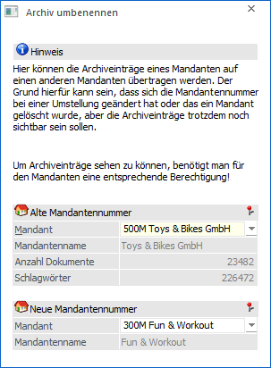

Im Menüpunkt…
1 WinLine ADMIN
1 Archiv
1 Archiv umbenennen
… können Archiveinträge eines Mandanten auf einen anderen Mandanten übertragen werden. Diese Anforderung kann z.B. dabei entstehen, dass sich Mandantennummern geändert haben oder Mandanten gelöscht wurden, jedoch die Archiveinträge erhalten bleiben sollen.

Ø Alte Mandantennummer
Aus der Auswahlliste kann jener Mandant gewählt werden, welcher "umbenannt" werden soll; z.B. sollen alle Archiveinträge, die in dem Mandanten "500M" archiviert wurden, einen neuen Mandanten zugewiesen bekommen.
Hinweis
Wird die Auswahl bestätigt, so werden als zusätzliche Info der Mandantenname, sowie die Anzahl der vorhandenen Dokumente und Schlagwörter angezeigt.
Ø Neue Mandantennummer
Aus der Auswahlliste kann jener Mandant gewählt werden, welchem die Archiveinträge zugewiesen werden sollen; z.B. alle Archiveinträge, welche den Mandanten "500M" hinterlegt haben, bekommen den neuen Eintrag "300M" zugewiesen und sind somit im Mandanten "300M" verfügbar.
Buttons

Ø Ok
Durch Drücken des Buttons "OK" bzw. der Taste F5 wird, nach Bestätigung einer Sicherheitsabfrage, die Übertragung gestartet.
Ø Ende
Mit dem Button "Ende" bzw. der ESC-Taste wird das Fenster geschlossen und keine Übertragung durchgeführt.